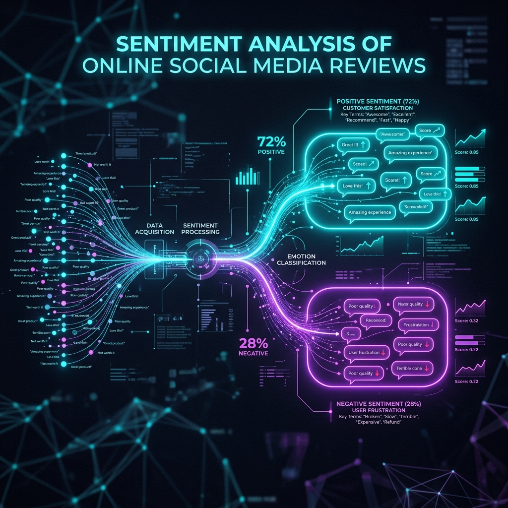

Sentiment Analysis of Online Social Reviews
A comprehensive data pipeline—from scraping raw social media data to visualizing emotional insights.
01. Data Collection & Cleaning
Cleaned raw social media data by removing stop-words, URLs, and special characters, and performing lemmatization to improve model accuracy. This crucial step ensured a high-quality dataset from otherwise "noisy" social media text.
02. Feature Engineering
Utilized TF-IDF Vectorization and Word Embeddings (Word2Vec) to transform unstructured reviews into high-dimensional feature vectors, turning text into meaningful numbers for the machine learning algorithms.
03. Model Selection
Trained and evaluated multiple models, including Naive Bayes, SVM, and BERT. Achieved a peak F1-score of [X]% using a fine-tuned BERT architecture.
04. Insights & Visualization
Developed sentiment distribution charts to identify key areas of customer dissatisfaction in real-time. This what the data actually revealed, giving actionable insights.
Confusion Matrix
A heat map showing how many "Positive," "Negative," and "Neutral" reviews the model predicted correctly.
Word Clouds
A visual representation of the most common words found in "Negative" vs. "Positive" reviews.
(e.g., <img src="confusion-matrix.png" alt="Confusion Matrix" style="width:100%; border-radius:8px;">)
(e.g., <img src="word-cloud.png" alt="Word Cloud" style="width:100%; border-radius:8px;">)
05. Research Context
Industry Alignment
To show alignment with current industry standards, this project leverages concepts from modern Multimodal Sentiment Analysis—looking at text, images, and audio together.
Zero-Shot Classification
Explored the use of Large Language Models (LLMs) for zero-shot classification (Liu & Li, 2026; "Sentiment Analysis," 2025) to further expand the pipeline's capabilities without extensive retraining.
06. Code & Live Demo
Review the Colab notebook to see the code running live.
07. Journal Publications
Access the published research paper IJIRT Journal International Journal Of Innovative Research In Technology.